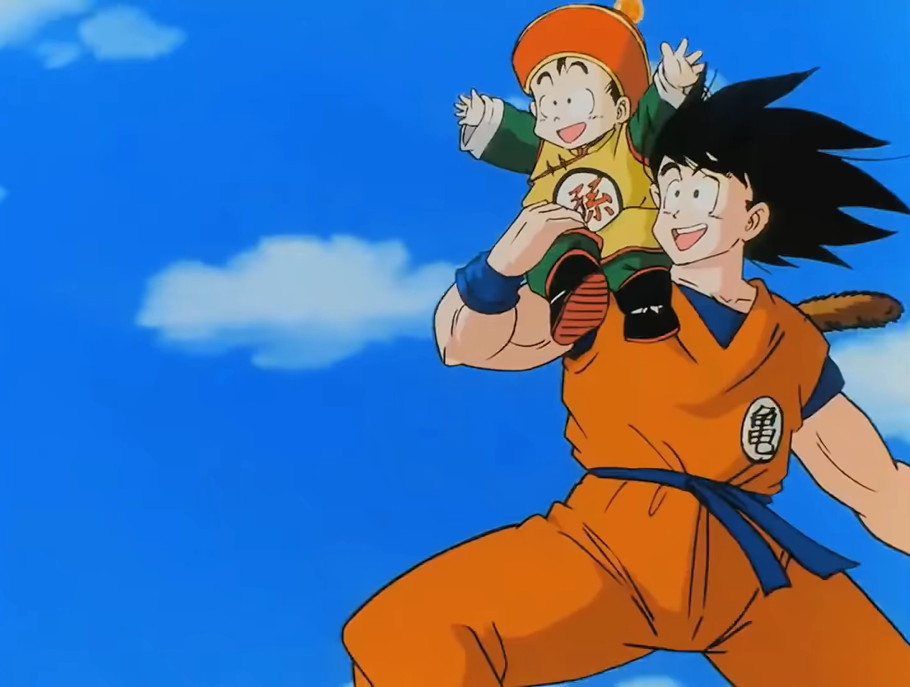
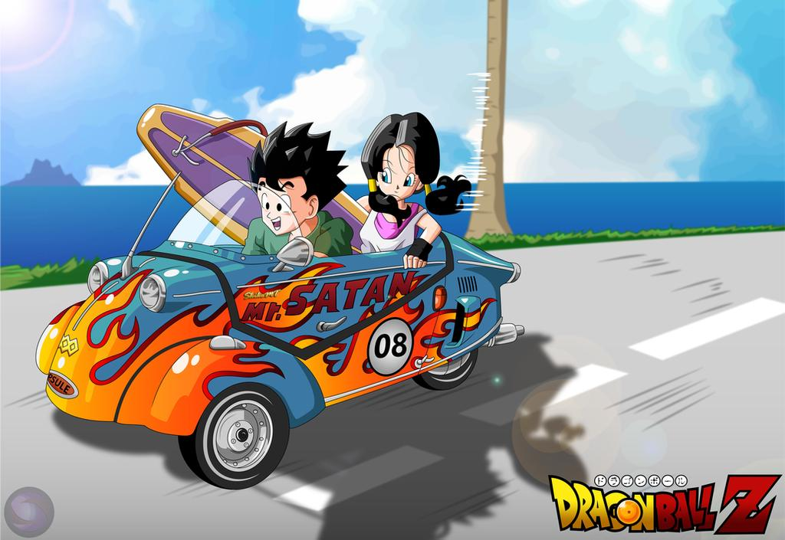
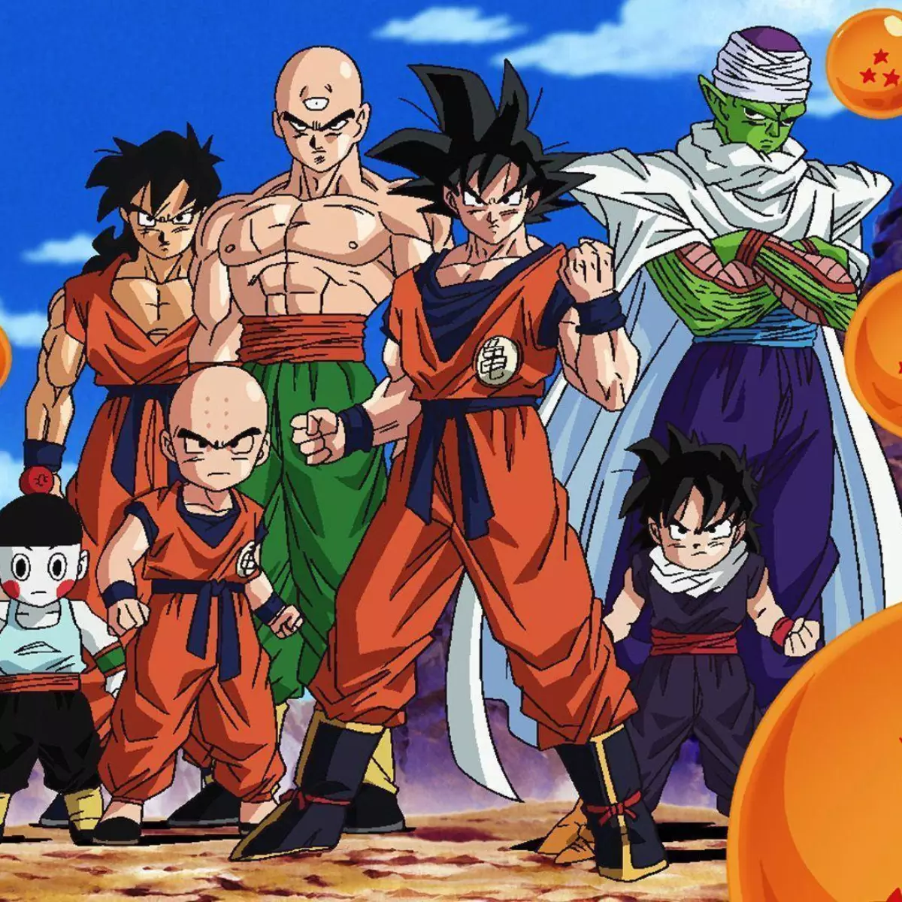
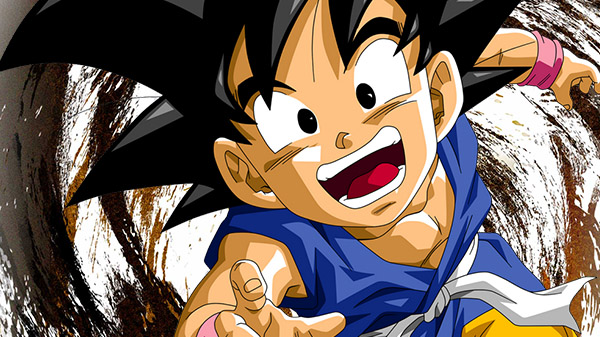

| Abertura 01 | Ano de lançamento | Letra | Música |
|---|---|---|---|
| Cha-La Head-Cha-La | 2005 | O céu resplandece ao meu redor (e ao meu redor) Vou voar, e estrelas brilham entre as nuvens sem fim Só a verdade vai cruzar pelo céu azul (pelo céu azul) E a verdade vai crescer dentro de mim Como um vulcão que entra em erupção Sua lava vai espalhar Verá toda a fúria do dragão Cha-la head-cha-la Não importa o que aconteça Sempre tenho a força e o poder Cha-la head-cha-la Não importa o que aconteça Tudo vai ficar melhor O céu resplandece ao meu redor (e ao meu redor) Vou voar, e estrelas brilham entre as nuvens sem fim Só a verdade vai cruzar pelo céu azul (pelo céu azul) E a verdade vai crescer dentro de mim Como um vulcão que entra em erupção Sua lava vai espalhar Verá toda a fúria do dragão Cha-la head-cha-la Não importa o que aconteça Sempre tenho a força e o poder Cha-la head-cha-la Vibrante o meu coração Sente emoção e tem amor pra dar Cha-la head-cha-la Não pense em nada, só escuta Sonhos dentro do coração Cha-la head-cha-la Não importa o que aconteça Tudo vai ficar melhor |  |
| Abertura 02 | Ano de Lançamento | Letra | Música |
| We've Gotta the Power | 2005 | Posso pressentir o perigo e o caos E ninguém agora vai me amedrontar Com a minha mente vou a mil lugares E a imaginação me dá forças para voar Sonhos, desejamos alcançar Ser alguém com o poder maior Que você já tem Liberdade é correr pelo céu Sempre unidos, vamos triunfar E se a nossa luta é pra valer Vou mostrar meu valor Dragon Ball Z Meu compromisso é sempre vencer! Quando eu surgir entre as nuvens do céu A eletricidade das coisas vai mudar Entre a vida e a morte Aventuras, vou viver Na escuridão, mistérios posso ver O futuro todo eu vou mudar Nova estrada com a luz do sol Vamos te trazer Liberdade, nova era vai chegar Energia tenho para usar E com alegria de viver, ninguém vai me deter Dragon Ball Z Meu compromisso é sempre vencer! Sonhos, desejamos alcançar Ser alguém com o poder maior Que você já tem Liberdade é correr pelo céu Sempre unidos, vamos triunfar E com alegria de viver, ninguém vai me deter Dragon Ball Z Meu compromisso é sempre vencer! |  |
| Abertura 03 | Ano de Lançamento | Letra | Música |
| Dragon Soul | 2009 | Voa, vamos, vem comigo Vamos rumo ao paraíso Unindo as forças Nossa maior Genki-dama explodirá Posso sentir meu coração se energizar Dentro de mim a aventura vai começar No céu azul por entre as nuvens vou te levar E todo o mal em cada inimigo vou derrotar A emoção de combater Os mais fortes até o fim Me faz superar toda a dor Seguirei em frente sem nenhum temor Voa, vamos, vem comigo Nossa hora é agora Voando ao vento Posso ser livre outra vez Voa, vamos, vem comigo Amanhã é um novo dia Na sua alma está O que você sempre sonhou encontrar Dragon Ball! Todo o poder do universo em minhas mãos Garantirei que nada possa te machucar Com sua luz eu vencerei a escuridão Você verá até o menor dos sonhos se realizar Não se pode mais ocultar Todo o seu poder de luta Os limites ultrapassar Sempre acreditando sem se entregar Voa, vamos, vem comigo Caminhando sempre em frente Barreiras derrubar Por um futuro melhor Voa, vamos, vem comigo Vamos rumo ao paraíso Na sua alma está O que você sempre sonhou encontrar Dragon Ball! |  |
| Abertura 04 | Ano de Lançamento | Letra | Música |
| Coração de Criança | 2002 | Seu sorriso é tão resplandecente Que deixou meu coração alegre Me dê a mão pra fugir desta terrível escuridão Desde o dia em que eu te reencontrei Me lembrei daquele lindo lugar Que na minha infância era especial para mim Quero saber se comigo você quer vir dançar Se me der a mão eu te levarei Por um caminho cheio de sombras e de luz Você pode até não perceber Mas o meu coração se amarrou em você Que precisa de alguém pra te mostrar o amor que o mundo te dá Meu alegre coração palpita Por um universo de esperança Me dê a mão, a magia nos espera Vou te amar por toda minha vida Vem comigo por este caminho Me dê a mão, pra fugir desta terrível escuridão Lembra, foi aqui que um dia deixei Um grande tesouro pra te lembrar Mesmo que um dia eu cresça Meu amor nunca terá fim Quero saber que galáxia você quer desvendar Se me der a mão, contigo eu irei A qualquer destino que esconde esse céu azul Mesmo assim, eu só quero lembrar Que tudo o que eu guardei foi desejo de amar Mas hoje eu sou esse alguém que vai te mostrar o amor Que tenho pra dar Meu alegre coração palpita Por um universo de esperança Me dê a mão, a magia nos espera Vou te amar por toda minha vida Vem comigo por este caminho Me dê a mão, pra fugir desta terrível escuridão |  |